The MPLAB Harmony CHM files are located in the ./doc subfolder of the package it documents. For example, documentation on the MPLAB Harmony 3 Configurator is found at ./mhc/doc/help_mhc.chm and documentation on the MPLAB Harmony Graphics Library is found at ./gfx/doc/help_harmony_gfx.chm.
Several icons are provided in the interface of the Help, which aid in accessing the Help content.
Table 1: Help Icon Features
|
Help Icon |
Description |
|
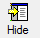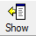 |
Use the Hide icon to turn off the left Help pane. Once the Hide icon is selected, it is replaced with the Show icon. Clicking the Show icon restores the left Help pane. |
|
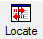 |
Use the Locate icon to visually locate the Help topic you are viewing in the Contents. Clicking the Locate icon causes the current topic to be highlighted in blue in the Contents pane. |
|
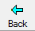 |
Use the Back icon to move back through the previously viewed topics in the order in which they were viewed. |
|
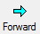 |
Use the Forward icon to move forward through the previously viewed topics in the order in which they were viewed. |
|
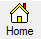 |
Use the Home icon to return to the first topic in the Help. |
|
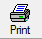 |
Use the Print icon to print the current topic or the selected heading and all subtopics. |
|
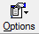 |
Use the Options icon to:
|
The Topic Window displays the current topic. In addition to the Help content, special links are provided in the upper portion of the window, as shown in Figure 2. Table 2 lists and describes the different links by their category
Figure 2: Help Links
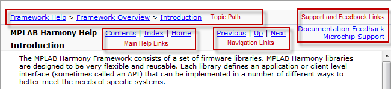
Table 2: Help Links
|
Link Category |
Description |
|
Topic Path |
The full path of the current topic is provided at the top and bottom of each topic, beginning with the top-level section name. |
|
Support and Feedback Links:
|
Click this link to send feedback in the form of an email (see Note 1). Click this link to open the Microchip Support Web page. |
|
Main Help Links:
|
Click this link to open the Contents in the left pane. Click this link to open the Index in the left pane (see Note 2). Click this link to go to the initial Help topic (see Note 2). |
|
Navigation Links:
|
Click this link to go back to the previously viewed topic. Click this link to go to the parent section of the topic. Click this link to go to the next topic. |
 Notes: Notes: |
|
The CHM Help provides four Tabbed windows: Contents, Index, Search, and Favorites.
Contents
The Contents tab displays the top-level topics/sections. Figure 3 shows the initial view when the CHM Help is first opened.
Figure 3: Initial Contents Tab View
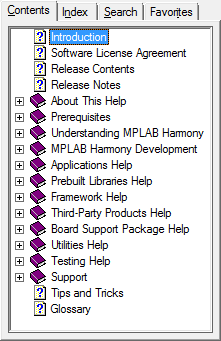
As topics are explored, the information in the Contents tab dynamically updates. For example, by clicking Prebuilt Libraries Help and using the Next link in the current topic to traverse through this section, the collapsed section automatically expands and the current topic is highlighted in light gray, as shown in Figure 4.
Figure 4: Current Topic Highlighting
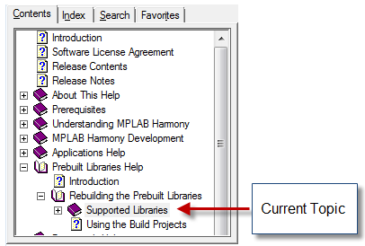
Index
Clicking the Index tab results in an alphabetic list of all Help index entries. Figure 5 shows the default Index interface.
Figure 5: Default Index Interface
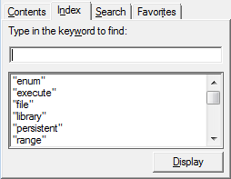
- To locate a specific entry, enter the keyword in the Type in the keyword to find: box. As you type, the index list dynamically updates.
- To display the desired item in the list, select the item and click Display, or double-click the desired item. The related content appears in the Help window.
Clicking the Search tab provides an efficient way to find specific information. Figure 6 shows the default Search interface.
Figure 6: Default Search Interface
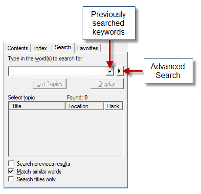
- Enter the specific word or words in the Type in the word(s) to search for: box
- Clicking the drop-down arrow provides the list of previously searched words
- The right arrow provides Advanced Search options: AND, OR, NEAR, and NOT
- Located at the bottom left of the Search window, three options are provided to narrow-down your search. By default, Match similar words is selected. To reduce the number of returned words, clear this box and select Search titles only, which restricts the search to only the topic titles in the Help, as shown in Figure 7.
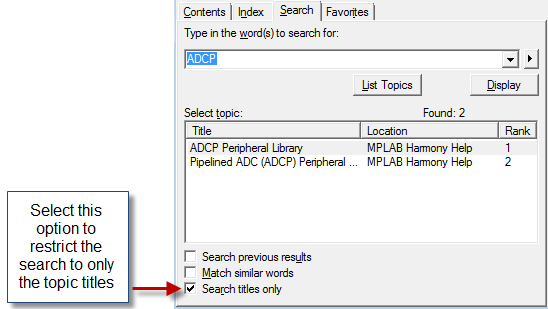
- The Title column provides the list of related topics
- The Location column lists in which Help system the topic was found (see Note)
- The Rank column determines to search result that most closely matches the specified word
|
Note: |
The Location column is automatically included in the CHM Help when the Advanced Search features are implemented and cannot be excluded. Its purpose is to provide the name of the Help system in which the topic is located for Help output that is generated from multiple sources. Since the MPLAB Harmony Help is contained within a single Help system, this information is the same for all searches. Do not confuse this column to mean the actual topic location. |
Favorites
Use the Favorites tab to create a custom list of topics that you may want to repeatedly access. Figure 8 shows the default Favorites interface.
Figure 8: Default Favorites Interface
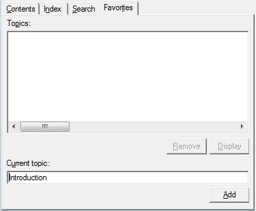
- The title of the current topic is shown in the Current topic: box.
- Click Add to add the topic to the Topics: list, as shown in Figure 9.
- Click Display to view the selected topic.
- Click Remove to remove the selected topic from the list of favorites.
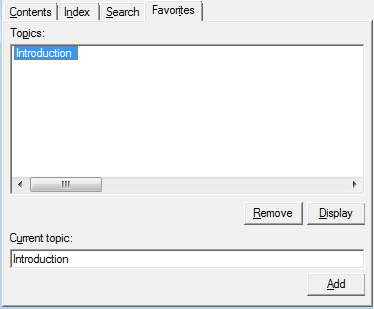
|
MPLAB Harmony TCP/IP Help
|